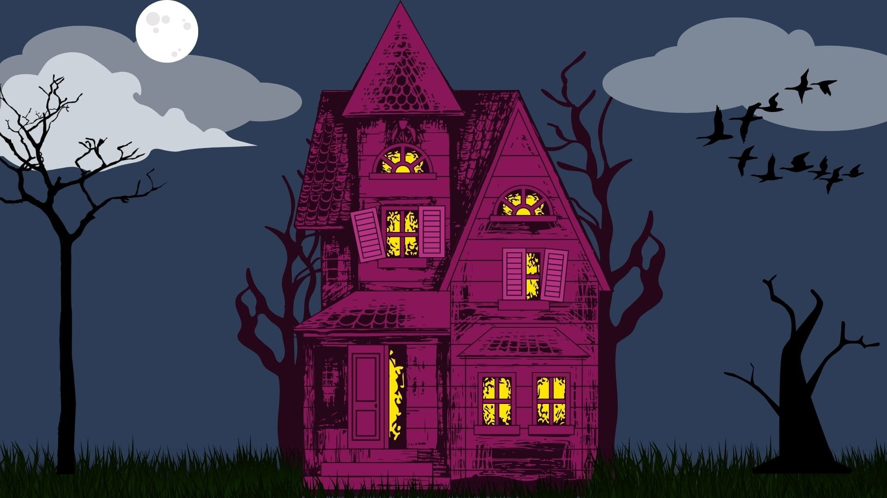

Exploring Eerie Locations with Interactive Leaflet Maps
Join us on a spine-tingling journey as we map out the most haunted places in New York, combining fascinating tales with interactive data visualization.
Data Visualization
Leaflet
New York
Author
Alex Labuda
Published
January 29, 2024
Haunted Place of New York

“There are things that are not of this world, mysterious phenomena that defy explanation. These are the tales of the haunted places in New York.” - Inspired by H.P. Lovecraft
New York, a city known for its towering skyscrapers and bustling streets, also harbors a less spoken-about aspect: its haunted past. From eerie mansions to historic landmarks, the state of New York is rich with locations that are said to be home to unexplained phenomena and ghostly presences.
In this blog post, we dive into the intriguing world of the paranormal by mapping out some of the most haunted places in New York. Using data visualization techniques with the Leaflet package in R, we bring these chilling tales to life. Each point on the map not only marks a location but also tells the story of its haunting, offering a unique glimpse into the mysterious and the unexplained.
As you explore the map, be prepared to uncover the hidden and eerie side of New York. Each marker is a doorway to a story that blurs the line between reality and the supernatural.
So, let’s embark on this spine-tingling journey and discover what secrets lie in the haunted corners of New York.
Click red points to read more!
Click red points to read more information about the haunted. Click or zoom in and out on yellow and green clusters to reveal more data points.
Show the code
leaflet(plot_data_formatted) %>%addTiles() %>%addCircleMarkers(lng =~longitude, lat =~latitude, popup =~pop_ups,radius =8, # Adjust the size of the circlecolor ="darkred", # Border colorfillColor ="darkred", # Fill colorfillOpacity =0.5, # Fill opacityclusterOptions =markerClusterOptions(transparent =TRUE) ) %>%addProviderTiles(providers$CartoDB.Positron)